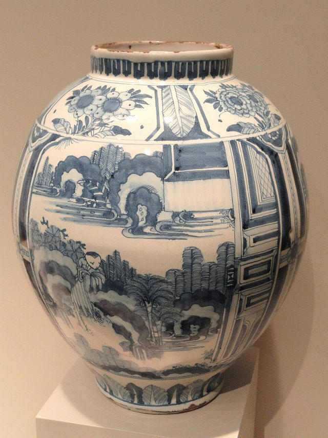

Home / Living Traditions / Celtic and Atlantic Europe
Playable heritage gameDelftware
Delftware is Dutch tin-glazed pottery painted in cobalt blue on a white ground. Here four tiles carry one picture, a vase of tulips inside a double ring with fans in the corners, painted in two blues.



How to play
- Look at the small panel at the top: it shows the finished four tiles.
- Dip the brush in cobalt and drag along the lit lines to draw the double ring, the vase, the stems and the tulips; press Next.
- Wash the vase and the tulips with pale blue by tapping each shape.
- Shade with fine cobalt lines and dots, then press Check to see your stars. Mirror repeats each stroke on the other half of the picture.
Rules at a glance
- The panel has three steps in order: outlines, washes, shading.
- The brush carries a limited load of paint; dip it again when it runs dry.
- A line scores by how closely it follows the guide; a wash scores by how much of the shape holds the right blue.
- Paint that lands outside an outline counts against you; undo takes back the last stroke.
- With Mirror on, each stroke is repeated on the other half of the picture.
- Three stars for a close, clean, evenly painted panel.
About the tradition
Delft in the Netherlands became known from the seventeenth century for blue-and-white earthenware and tiles, painted in cobalt over a white tin glaze and fired. Flowers, ships, landscapes and fan-shaped corner motifs lined kitchens and hearths, and a few workshops in Delft still paint by hand.
Origins
A living tradition passed from person to person; it is not tied to a single dated origin. It belongs to the cultural world of Celtic and Atlantic Europe.
Credits
- Photo: Daderot, CC0, source on Wikimedia Commons
- Text: CC BY-SA 4.0, World Heritage Games.
Sources

Get the app
Delftware is one of 7 tile and pottery crafts in the Tiles & Pottery of the World app for Android. Submitted to Google Play; in review. Store links appear here the day it goes live. One app, many traditions, no account needed.
More games to play


Welsh Love Spoon Carving
United Kingdom · Crafts and makingPlay preview · in the Woodcraft & Metal of the World app
Tessellated Mosaic Making
Italy +1 · Crafts and makingPlay preview · in the Craft Designs of the World app
Blacksmith's Forge
United Kingdom +4 · Crafts and makingPlay preview · in the Woodcraft & Metal of the World app

More from Netherlands


Clinker Boat Building
Norway +2 · Crafts and making
Fierljeppen
Netherlands · Street and playground games
Frisian Road Bowling
Ireland +2 · Dexterity and skill games